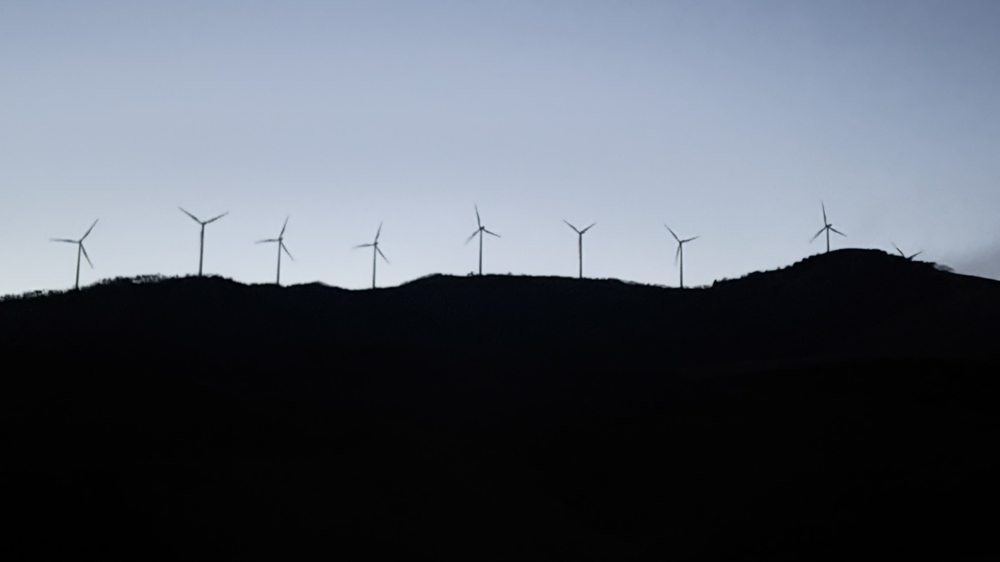
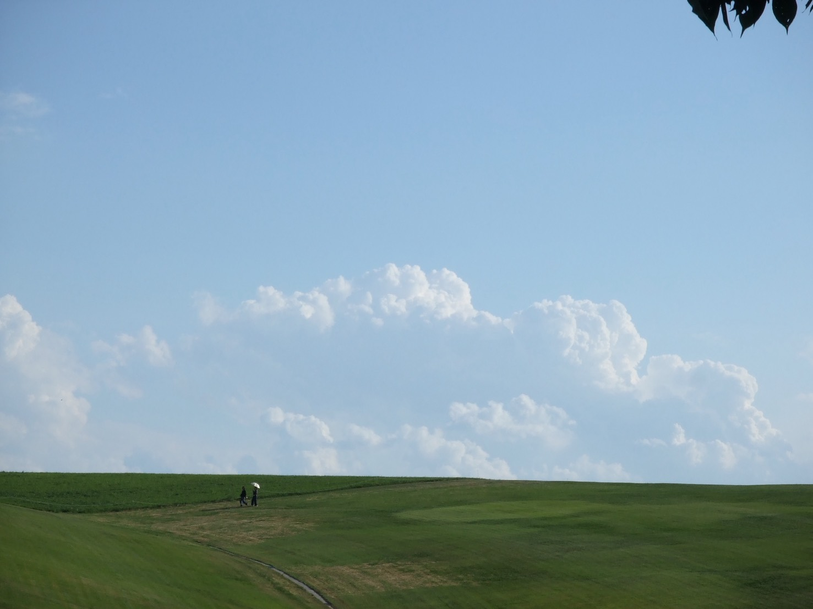
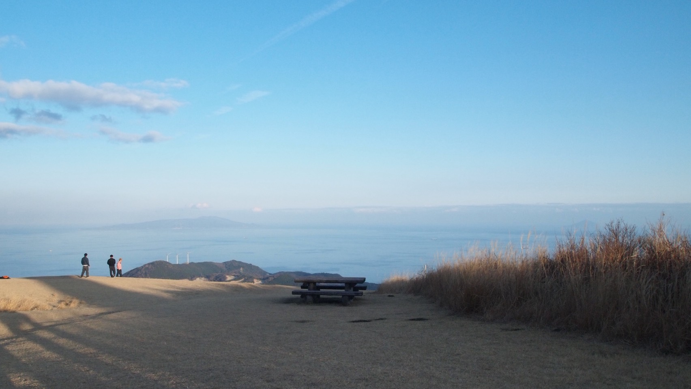
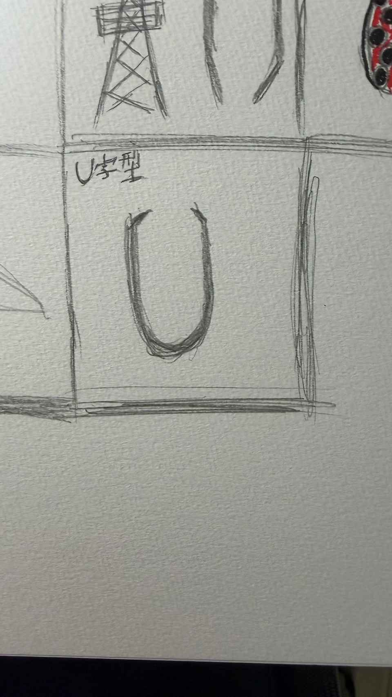

XBP
XBP
XBP
XBP

SCROLL TO EXPLORE ↓



MY PERSPECTIVE
日常の中にある、何気ない景色。
自分の目で見つけた世界を写真に残す。
MY WORLD / 2026
02 / DIGITAL FABRICATION
IDEA TO CREATION

DIGITAL FABRICATION
デジタル技術を活用したものづくり。 授業で制作した作品や、 学んだことを紹介します。
VIEW MORE →03 / DESIGN
THINK AND DESIGN
DESIGN EXERCISE
デザインについて考え、 アイデアを形にする。 授業で制作した作品や演習内容を紹介します。
VIEW MORE →